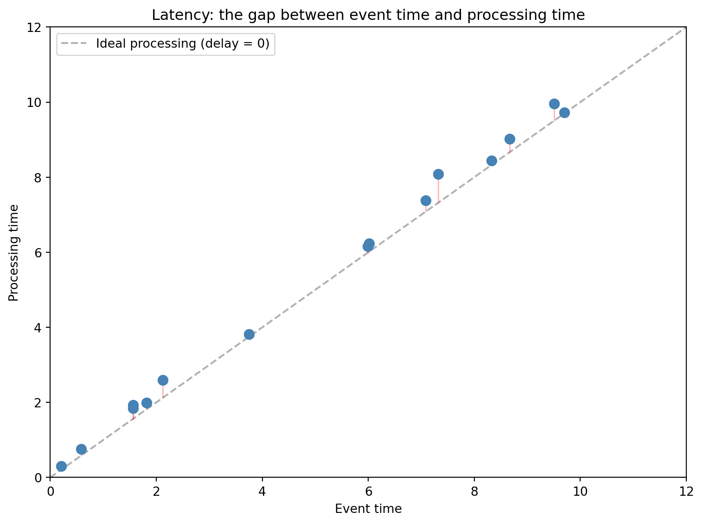

Goal: Understand the fundamentals of stream processing — what a data stream is, how to interpret time in streaming systems, and how time windows work.
Data Streams
When you watch a series on a streaming platform, it delivers video fragments continuously. You don’t wait for the entire file to download — data flows.
The same concept applies to business data. Every transaction, page click, sensor reading, or login event is an event that appears in a continuous, infinite stream.
An event is an immutable record describing something that happened at a specific point in time. It can be encoded as JSON, CSV, or a binary format. Once generated, an event doesn’t change — it can be read but not modified.
A data stream is an infinite sequence of events ordered in time.
Systems that handle data streams: transactional systems, IoT monitoring, website analytics, online ads, social media, logging systems.
The key perspective shift from the previous lecture: in batch processing the data source is a file — written once, read many times. In stream processing the source is a producer that generates events continuously, and those events can be processed by multiple consumers simultaneously.
Stream Processing vs Real-Time Analytics
These two concepts are often confused, but they mean different things.
Stream processing is an architecture — we process data in motion as it arrives, instead of collecting it into files.
Real-time analytics is a business requirement — data must be processed fast enough to meet the company’s expectations. What “fast enough” means depends on context:
Hard real-time systems (e.g., flight control systems): any delay can have catastrophic consequences. Time guarantees are required.
Soft real-time systems (e.g., weather monitoring, dynamic pricing): some delay is tolerated, but shorter is better for business value.
Stream processing enables real-time analytics, but doesn’t guarantee it on its own — everything depends on architecture, infrastructure, and optimization.
Time in Streaming Systems
In batch processing, time isn’t critical — we analyze historical data, and the moment we run a report has no connection to when the analyzed events occurred.
In stream processing, time is critical, and we distinguish two concepts:
Event Time
The moment the event actually occurred. Assigned by the data source (e.g., sensor, application). This is the time we care about analytically.
Processing Time
The moment the system processes the event. Always later than event time — because data must travel through the network, be received by the broker, and processed by the consumer.
Code
import matplotlib.pyplot as pltimport numpy as np# Illustration: event time vs processing timenp.random.seed(42)n =15event_times = np.sort(np.random.uniform(0, 10, n))delays = np.random.exponential(0.5, n)processing_times = event_times + delaysfig, ax = plt.subplots(figsize=(8, 6))ax.plot([0, 12], [0, 12], 'k--', alpha=0.3, label='Ideal processing (delay = 0)')ax.scatter(event_times, processing_times, c='steelblue', s=60, zorder=5)for i inrange(n): ax.plot([event_times[i], event_times[i]], [event_times[i], processing_times[i]],'r-', alpha=0.3, linewidth=1)ax.set_xlabel('Event time')ax.set_ylabel('Processing time')ax.set_title('Latency: the gap between event time and processing time')ax.legend()ax.set_xlim(0, 12)ax.set_ylim(0, 12)plt.tight_layout()plt.show()

In an ideal world, every event would be processed instantly — points would lie on the diagonal. In reality, there’s always a delay (points below the diagonal). Causes: network transmission, temporary connectivity loss (e.g., driving through a tunnel), system overload.
Watermarking — Handling Late Events
What to do with events that arrive late? Two strategies:
Discard — ignore events that arrive after the window closes. Monitor the number of skipped events and alert when there are too many.
Watermarking — define additional wait time for late events. A watermark is a marker saying: “all events up to this point should have arrived by now.” Events arriving before the watermark are included; after it — discarded.
Watermarking is a trade-off: longer wait time = more events included, but greater delay in producing results.
Time Windows
In stream processing we can’t analyze “all data” because the stream is infinite. Instead, we group events into time windows — bounded segments on which we perform computations.
Tumbling Window
Fixed length, windows don’t overlap. Each event belongs to exactly one window.
Use case: periodic reports — e.g., transaction count every 5 minutes.
Code
from datetime import datetime, timedeltafrom collections import defaultdict# Simulated eventsevents = []t = datetime(2026, 3, 9, 10, 0, 0)for i inrange(20): t += timedelta(seconds=15+ (i *7) %30) events.append({"time": t, "amount": 50+ i *13})# Tumbling window: 1-minute windowswindows = defaultdict(list)for e in events: key = e["time"].replace(second=0) windows[key].append(e["amount"])print("Tumbling Window (1 min):")for w, amounts insorted(windows.items()):print(f" {w.strftime('%H:%M')} -> {len(amounts)} events, total: {sum(amounts)} PLN")
In this lecture you learned the fundamentals of stream processing:
A data stream is an infinite sequence of events ordered in time.
Event time and processing time are two different things — managing that difference is a core challenge.
Watermarking handles late events.
Time windows group an infinite stream into finite segments for analysis.
In the next lecture we’ll explore Apache Kafka — a platform that implements these concepts in practice, along with microservice architecture and APIs.
Business Impact
Time windows enable automation of decision processes: dynamic pricing in response to demand (sliding window), detecting unusual customer behavior (session window), or generating operational alerts (tumbling window). With stream analytics, a company detects problems as they happen — not a week later.